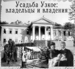
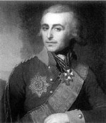
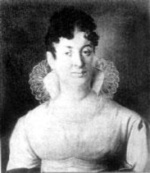
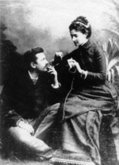
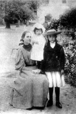
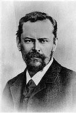
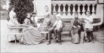
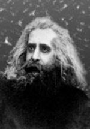
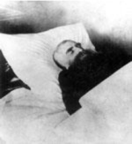

Страницы авторов "Тёмного леса"
Литературный Кисловодск и окрестности
Пишите нам! temnyjles@narod.ru
|  |
Рассказ об усадьбе Узкое, включенной в черту Юго-Запада столицы, открывает серию очерков - путеводителей по бывшим дворянским усадьбам, ориентированную на проведение экскурсий с учащимися.
Для удобства пользования очерк разделен на две части: "I .. Владельцы", в которой рассказывается об истории конкретной усадьбы и лицах, связанных с нею; и "II. Владения" - непосредственно путеводитель по существующим зданиям.
Несмотря на обилие сохранившихся сооружений, в Узком нет выдающихся памятников архитектуры, за исключением оригинальной церкви конца XVII в. Оно интересно скорее в бытовом плане, как один из редких в Москве примеров богатой, хорошо спланированной барской усадьбы с удобным господским домом (ныне главным корпусом санатория Российской академии наук "Узкое") и практичными надворными постройками, сохранившей планировочные основы и большую часть исторической территории.
|  | Портрет графа П.А. Толстого Неизв. художник. Нач. XVIII в. |
|  | Портрет М.А. Толстой Неизв. художник. Нач. XIX в. |
Первыми владельцами Узкого, оставившими в нем реальные следы своей деятельности, были Стрешневы. Этот ранее ничем не примечательный захудалый дворянский род, произошедший из провинциальнейшего калужского городка Мещовска, вынес наверх "бунташный" XVII в. Овдовевший царь Михаил Федорович, подыскивая себе новую супругу, в 1626 г. остановил выбор на молодой красавице Евдокии Лукьяновне Стрешневой, что, разумеется, не могло не возвысить ее родственников. Один из них, боярин Максим Федорович Стрешнев (ум. 1657), приобрел в 1629 г. у Поместного приказа находившиеся к югу от Москвы бывшие владения князя А.Ф. Гагарина и П.Г. Очина-Плещеева, составив из них свою вотчину.
Задумав там построиться, М.Ф. Стрешнев выбрал для этого место на пустоши Узкой, оказавшейся наиболее удобной для создания усадьбы. На ней до 1641 г. были сооружены первые деревянные здания. Доминантой ансамбля стала одноглавая церковь Казанской иконы Божией Матери с приделом Святителя Николая Чудотворца. В 1640 и 1643 гг. М.Ф. Стрешнев существенно увеличил территорию усадьбы, но позже на несколько лет оставил Узкое, будучи назначен воеводой в далекий сибирский город Верхотурье. В 1657 г. вотчина перешла к одному из его сыновей - боярину Григорию Максимовичу Стрешневу (ум. 1665). Со временем Узкое унаследовал его младший брат, стольник Яков Максимович Стрешнев (ум. 1686), впоследствии бывший воеводой в Олонецке. В 1686 г. Узкое досталось его сыну - окольничему Дмитрию Яковлевичу Стрешневу. Новый владелец, нуждаясь в деньгах, вскоре расстался с вотчиной, продав ее в начале 1690-х гг. за 5 тысяч рублей - сумму просто фантастическую по тому времени. В роли покупателя Узкого выступил представитель другой ветви фамилии Стрешневых - Тихон Никитич (1649-1719), суровый и властный боярин, возглавлявший тогда главный орган военного управления в стране - Разрядный приказ. При нем в усадьбе была сооружена новая высокая пятиглавая каменная церковь, сохранившаяся до наших дней, - уникальный памятник, из-за своей необычности не отмеченный учебниками по архитектуре. В 1697 г. после завершения внутренней отделки она была освящена (известная по литературе другая дата этого события - 1698 г. - неверна).
Т.Н. Стрешнев завещал Узкое своей внучке Софье Ивановне Стрешневой (170?-1739). Но та к 1719 г. - времени вступления этого документа в силу - оказалась несовершеннолетней. Поэтому вотчиной временно управляла мать новой владелицы - Анна Лукинична Стрешнева.
Точная дата появления на свет С.И. Стрешневой не отмечена в родословных. Во всяком случае, своего юридического совершеннолетия она достигла уже к 1723 г., поскольку именно тогда Вотчинная коллегия своим "определением" утвердила за ней другое подмосковное дедовское село - Рождествено-Шерапово.
В 1726 г. С.И. Стрешнева вышла замуж за морского офицера князя Бориса Васильевича Голицына (1705-1768), а Узкое и другие имения стали ее приданым. Документальные сведения о первых десятилетиях голицынского периода минимальны. Владелица имения умерла достаточно молодой, в 1739 г., оставив Узкое мужу, Б.В. Голицыну, имени которого еще предстоит занять подобающее место на страницах истории отечественного флота. По свидетельству историка князя М.М. Щербатова, Б.В. Голицын "имел некоторой случай у двора", что, возможно, способствовало его карьере, так как в 1746 г. он стал обер-цехмейстером, а в 1755 г. - вице-адмиралом и генерал-кригс-комиссаром флота, одно время являясь и главным начальником всей артиллерии - генерал-фельдцихмейстером (позже этот пост стал прерогативой исключительно членов императорской фамилии). В отставку Б.В. Голицын вышел по состоянию здоровья в чине полного адмирала.
После смерти владельца, скончавшегося 12 июля 1768 г., Узкое стало собственностью его сыновей, заслуженных офицеров, участвовавших в Семилетней войне с Пруссией: гвардии капитана и камер-юнкера Василия (1729 - после 1771), бригадира Владимира (1731-1798), генерал-майора Алексея (1732-1792) и генерал-поручика Ивана (1735- 1811) Голицыных, а также их сестры Александры (1753-?). Вскоре она стала супругой тайного советника и обер-камергера барона Григория Николаевича Строганова (1731- 1777) и, получив богатое приданое, потеряла права на часть Узкого.
Алексей Борисович Голицын, став по разделу с братьями единственным хозяином Узкого, реконструировал находившуюся там усадьбу, сохранив имевшиеся планировочные основы. Прежний каменный господский дом был разобран. На его фундаменте выстроили большое деревянное здание, в своей основе сохранившееся до наших дней. Вместе с господским домом были реконструированы или выстроены заново остальные постройки. Точные даты проводившихся в имении строительных работ неизвестны. Ориентировочно это 1770-1780-е гг., вероятнее всего последнее из этих десятилетий, поскольку известно, что в конце 1770-х гг. А.Б. Голицын постоянно жил за границей, в частности в Швейцарии, где в поисках нравственного совершенствования свел знакомство с популярным философом-мистиком того времени Л.К. Сен-Мартеном, и, значит, времени для реконструкции усадьбы у него тогда просто не было.
После внезапной смерти А.Б. Голицына 9 ноября 1792 г. Узкое унаследовал его сын поручик лейб-гвардии Семеновского полка Егор Алексеевич Голицын (1773-1811), определенный Екатериной II в качестве камергера "ранга бригадирского" ко двору великого князя Александра Павловича, будущего Александра I, и его невесты Елизаветы Алексеевны.
Аннотация к портрету Е.А. Голицына работы знаменитого А. Молинари, впервые опубликованному в издании великого князя Николая Михайловича "Русские портреты XVIII и XIX столетий", в числе других уже известных читателю сведений любезно сообщает: "Парижское воспитание дало ему прекрасное знание французского языка, но совершенно испортило его, сделав развратным человеком и игроком, и довело до преждевременной смерти". Е.А. Голицын скончался в Москве 21 декабря 1811 г. холостым. Его наследницами стали сестры: графиня Мария Алексеевна Толстая (1772- 1826), графиня Софья Алексеевна де Сент При (1776-1815) и графиня Елизавета Алексеевна Остерман-Толстая (1779-1835), уже давно нашедшие себе мужей среди молодых блестящих гвардейцев, которыми были так богаты екатерининское и павловское царствования. Однако до Отечественной войны 1812 г. крестьяне села Узкого и деревни Нижние Теплые Станы не знали, чьей собственностью они оказались после смерти Е.А. Голицына, так как новые помещицы не удосужились известить об этом местных жителей. Имя Е.А. Голицына в качестве владельца обоих населенных пунктов значится еще в 1813 г. в "Ведомости, учиненной в Московском земском суде, о владельческих селениях с показанием претерпенных ими от нашествия неприятеля разорений" по Московскому уезду. В ней отмечено, что в этом имении "отнято неприятелем хлеба 2500 четвертей, сена 4700 пудов, лошадей 28, коров 30, баранов, овец 90, разграблена церковь, господский дом, имущество дворовых людей и крестьян, хлеб и весь скот, всего на сумму 124 877 рублей". Как видим, нанесенный французами ущерб был грандиозным, однако вполне логично предположить, что пострадавшие крестьяне могли довершить разграбление, пользуясь отсутствием владелиц.
Достаточно скоро после войны наследницы Е.А. Голицына разделили между собой его имения. Узкое досталось старшей из них - М.А. Толстой, впоследствии увековеченной А.С. Грибоедовым в качестве "княгини Марьи Алексевны". Не будучи красавицей, она, по свидетельству историка П.Ф. Карабанова, имела ".. .ум оригинальный с необыкновенными странностями", искупавший недостатки внешности. Муж владелицы Узкого граф Петр Александрович Толстой в 1816 г. был назначен командующим 5-м пехотным корпусом, расквартированным в Москве и ее окрестностях. А рядом с местом новой службы оказалось такое великолепное место для приложения его сельскохозяйственных навыков, как большое имение жены.
После смерти жены, скончавшейся в конце 1826 г., П.А. Толстой унаследовал Узкое вместе с детьми: Алексеем (1798-1854), Александром (1801-1873), Егором (1803-1874), Владимиром (1805-1875), Иваном (1811-1852), Евдокией (1795-1863), к тому времени уже бывшей замужем за прежним одесским градоначальником графом Александром Дмитриевичем Гурьевым (1787-1865), Софьей (1800-1886), впоследствии графиней Апраксиной, Анной (1802-1883), впоследствии Бахметевой и Александрой (1804-1858), впоследствии графиней Мордвиновой. Несмотря на общность владения имением, хозяйством в нем, как и раньше, занимался П.А. Толстой, что дало повод А.С. Пушкину иронически назвать его "Толстой-Узкой", выделив этим из многочисленных представителей разветвленного рода Толстых, живших в то время.
После того как Узкое вместе с московским домом в Леонтьевском переулке перешло в полную собственность П.А. Толстого - по разделу с детьми, состоявшемуся в 1836 г., масштаб строительства в усадьбе увеличился. Так, до 1839 г. в Узком был сооружен нынешний северный флигель, в документах того времени названный "маленький дом" или "флигель к церкви". Граф не оставил и деятельность в Московском обществе сельского хозяйства. По текущим делам к нему в Узкое не раз наведывался экономист С.А. Маслов, бывший секретарем этой организации. "Издание журнала и сношения общества внутри и вне России, возложенные на непременного секретаря, обязывали меня докладывать графу П[етру] Александровичу] о предметах переписки общества, как официальной, с Министерством государственных имуществ, так и частной, а потому я нередко приезжал к нему в его подмосковное село Уское и имел утешение видеть, как он принимал к сердцу все относящееся до чести общества и пользы общественной", - писал позднее С.А. Маслов.
Граф скоропостижно скончался 28 сентября 1844 г. в своем московском доме. Его наследниками стали сыновья. К ним перешли Узкое и дом в Леонтьевском переулке со всей обстановкой. Младший сын, Иван Петрович Толстой (1811-1852), счел благоразумным тут же отказаться от наследства за себя и за своих потомков в пользу остальных братьев: Алексея, Александра, Егора и Владимира. 13 июня 1845 г. они юридически оформили раздел отцовского имущества. По нему единственным хозяином Узкого стал Владимир Толстой - тогда еще полковник лейб-гвардии Уланского полка, ранее, очевидно по протекции отца, бывший одним из адъютантов московского генерал-губернатора Д.В. Голицына. Как явствует из многочисленных хозяйственных документов, в Узком во время его перехода к В.П. Толстому, впоследствии ставшему генерал-майором, существовало хорошо развитое оранжерейное хозяйство, приносившее значительные доходы. В прудах разводили рыбу. В многочисленных оранжереях выращивались ананасы, персики и абрикосы, а также другие культуры, экзотические для средней полосы России. Много редких растений росло на открытом воздухе. Имелся вишневый сад. В господском доме было немало мебели красного дерева. По стенам висели картины и портреты, очевидно фамильные.
После смерти В.П. Толстого, скончавшегося 8 февраля 1875 г., Узкое унаследовали его ближайшие родственники: жена С.В. Толстая и любимая племянница графиня Мария Егоровна Орлова-Давыдова, урожденная графиня Толстая (1843-?). По разделу наследства между ними, состоявшемуся ориентировочно в 1878-1879 гг., единоличной владелицей Узкого стала С.В. Толстая. В свою очередь в апреле 1883 г. она передала Узкое своему племяннику и воспитаннику князю Петру Николаевичу Трубецкому (1858- 1911). Официально была составлена купчая крепость - не более чем формальность, что подтверждает сумма, указанная в документе: такое большое имение общей площадью 214 десятин с господским домом, флигелями и большими и многочисленными хозяйственными постройками было оценено всего в 3 тысячи 500 рублей.
Новый хозяин Узкого П.Н. Трубецкой был типичным русским барином, любившим хорошо поесть и весело пожить, ценителем породистых лошадей и шикарных женщин. На протяжении многих лет он последовательно занимал ответственные выборные должности, сперва Московского уездного, а затем губернского предводителя дворянства. Во время первой русской революции князь стал одним из основателей Союза русских людей - тогда одной из немногих черносотенных организаций в России. Женой его была княжна Александра Владимировна Оболенская (1861-1939) - дама красивая и властная.
По мере роста семьи П.Н. Трубецкому пришлось перестраивать обветшавший господский дом в Узком. Определенную роль в этом сыграл его отец, Николай Петрович Трубецкой (1828-1900). Выбор архитектора для проведения реконструкции усадьбы определялся лишь родственными связями и, разумеется, оказался неудачен. Перестраивать Узкое был приглашен женатый на одной из родственниц Трубецких, княжне Шаховской, С.К. Родионов, который, по свидетельству единокровного брата владельца Узкого, Григория Николаевича Трубецкого (1873-1929), ".был хороший человек, но недалекий и довольно бездарный архитектор и не очень толковый". Господский дом был им стилизован под дом в Ахтырке (Дмитровский уезд), бывшем родовом имении Трубецких, которое незадолго до того Н.П. Трубецкой продал. Теперь функции Ахтырки перешли к Узкому, поэтому симптоматично украшение фронтона узковского господского дома родовым гербом Трубецких.
Летом 1895 г. в Узком жил единокровный брат владельца имения (от второго брака их отца) князь Сергей Николаевич Трубецкой (1862-1905) вместе с женой Прасковьей Владимировной, урожденной княжной Оболенской (1860-1914), и детьми. Он, тонкий интеллигент, мыслитель и ученый, составлял почти полную противоположность владельцу имения. Однако их сближало своеобразное двойное родство: их супруги приходились друг другу родными сестрами. Это противоречило церковным канонам. Поэтому в свое время для совершения венчания С.Н. Трубецкого был приглашен не обычный приходской священник, а военный, менее зависимый от духовного начальства; крупная денежная сумма быстро успокоила его совесть.
По свидетельству врача Г.Н. Сперанского, летом 1895 г. в Узкое приезжал двоюродный брат П.Н. Трубецкого, скульптор князь Паоло (Павел Петрович) Трубецкой (1866-1938). Владелец имения привечал своего итальянского родственника, прибывшего в Россию работать и преподавать, и на первых порах оказывал ему покровительство, вскоре ставшее ненужным. Может быть, именно в Узком у Паоло Трубецкого возникла идея его известного произведения "Дети Трубецкие", запечатлевшего сыновей С.Н. и П.В. Трубецких - Николая (1890-1938) и Владимира (1891-1937), сидящих в свободных позах на небольшой парковой скамейке. Живописная трактовка формы с богатой игрой светотени придает их фигурам естественность и убедительность. Это одна из самых поэтичных скульптур конца XIX столетия. Сразу после своего завершения в 1900 г. она экспонировалась на выставках - в Петербурге, устроенной художественным объединением "Мир искусства", и в Париже. Затем скульптура вернулась в Россию и заняла место в большой гостиной Узкого (ныне находится в Государственном Русском музее).
|  | П.Н. и А.В. Трубецкие во время свадебного путешествия Флоренция. 1884 г. |
|  | Учительница С.А. Иванова в Узком с дочерями П.Н. и А.В. Трубецких: Александрой (на руках) и Любовью. Фото 1895 г. |
|  | С.Н. Трубецкой |
|  | Трубецкие в Узком. На скамейке слева направо: Александра Владимировна с дочерью Любовью, Петр Николаевич с сыном Николаем, Прасковья Владимировна и старший сын П.Н. и А.В. Трубецких Владимир. Фото 1895 г. |
|  | В.С.Соловьев Фото 1900 г. |
В следующий раз С.Н. Трубецкой приехал с семьей в Узкое только летом 1900 г. Тогда он пригласил своего друга, философа В.С. Соловьева, приехать к нему в усадьбу 15 июля для того, чтобы отпраздновать именины. Однако предполагавшегося торжества не получилось, так как В.С. Соловьев еще в Москве почувствовал себя тяжелобольным и, с трудом добравшись до Узкого, проболел две недели и скончался там (его могила сохранилась на старом кладбище Новодевичьего монастыря).
Владелец Узкого П.Н. Трубецкой 4 октября 1911 г. был убит одним из собственных племянников - Владимиром Григорьевичем Кристи (1882-1946), не без оснований приревновавшим к нему собственную жену. Поскольку все завещания князя были составлены в пользу А.В. Трубецкой, то она очень быстро добилась утверждения в правах наследования и ввода во владение огромными имениями мужа, в том числе Узким. Ведением в них хозяйства управлял старший сын княгини - Владимир Петрович Трубецкой.
Несмотря на волну погромов помещичьих усадеб, прокатившуюся по стране после Февральской революции, В.П. Трубецкой с семьей и его мать не побоялись приехать на лето 1917 г. в Узкое. Вместе с ними там жила одна из сестер В.П. Трубецкого - Александра Петровна Тимашева (1894-1953) со своим тогдашним мужем. Обстановка вокруг уже была достаточно неспокойной: как-то местные крестьяне, навестив своих бывших господ, конфисковали у них почти все имеющееся оружие. После Октябрьских боев в Москве Трубецкие и Тимашевы уехали на курорт Ессентуки, навсегда покинув Узкое.
|  | Вл. Соловьев на смертном одре. 1 августа 1900 г. |
В 1919-1920 гг. в Узком находились детский санаторий, организованный отделом здравоохранения губернского Совета рабочих и крестьянских депутатов, и совхоз. 15 апреля 1921 г. хозяйственные постройки вместе с земельными угодьями были переданы Луговому опорному пункту, вскоре преобразованному в рассадник кормовых трав (впоследствии Опытное поле по кормовому вопросу). В 1922 г. основные усадебные постройки - господский дом и флигеля и некоторые другие - были переданы Центральной комиссии по улучшению быта ученых (ЦеКУБУ) для организации санатория. В Узком отдыхали и работали практически все крупнейшие ученые страны, академики и члены-корреспонденты Академии наук, деятели культуры и искусства. В 1931 г. Узкое стало санаторием Комиссии содействия ученым (КСУ), ставшей преемницей ЦеКУБУ, против которой была проведена в печати целая кампания. В приснопамятном 1937 г. уже в связи с ликвидацией КСУ Совнарком передал Узкое Академии наук.
26 ноября 1941 г. на базе санатория "Узкое" был развернут полевой передвижной госпиталь 104-А, находившийся в усадьбе более месяца. По решению Мособлсовета Узкое с 16 марта 1942 г. занял эвакогоспиталь, действовавший до весны 1943 г. Среди сотрудников этих госпиталей был и персонал санатория. После стабилизации обстановки на фронтах в усадьбе в 1943 г. был открыт дом отдыха Академии наук (это было уже некоторым понижением статуса, обусловленным состоянием здания), однако через несколько лет он получит статус санатория, в котором отдыхали многие выдающиеся ученые. Узкое остается санаторием до нашего времени.
Окончание следует
Последнее изменение страницы 21 Nov 2018
{kind=link}
{kind=link}
{kind=link}
{kind=link}
{kind=link}
{kind=link}
{kind=link}
{kind=link}
{kind=link}